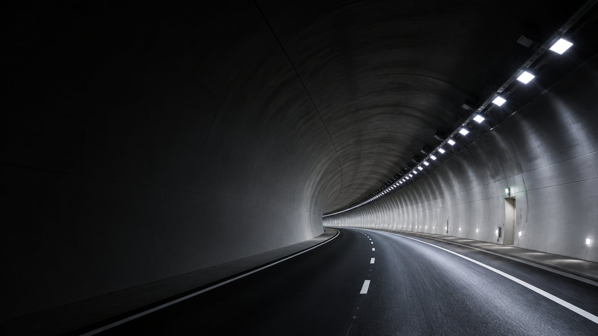
01
ROAD · TUNNEL · TRAFFIC SIGNAL
도로 · 교통 인프라 조명
가로등·터널등·교통신호등주부터 그 조명을 세우는 지주와 수배전반까지 한 번에. 도로 조건에 맞춘 배광 설계와 구조 검토, 현장 납품까지 한 회사가 맡습니다.
SINCE 1987 · 산업조명 제조 전문기업
가로등주·신호등주·조명타워부터 LED 등기구까지.
평택 7,550평 직영공장에서 설계·제조·품질검사·납품을 한 회사가 끝까지 책임집니다.
0년
SINCE 1987 · 제조 외길
0평
평택 직영공장 (부지 6,250평)
0종
생산설비
0종
검사설비
0+
누적 납품처
MANUFACTURING SYSTEM
조명기구와 그 구조물을 함께 만드는 회사는 많지 않습니다. 세광산업조명은 기업부설연구소의 설계, 생산 1·2동의 제작, 자체 품질시험실의 검사, 현장 납품까지 한 라인에서 책임집니다.

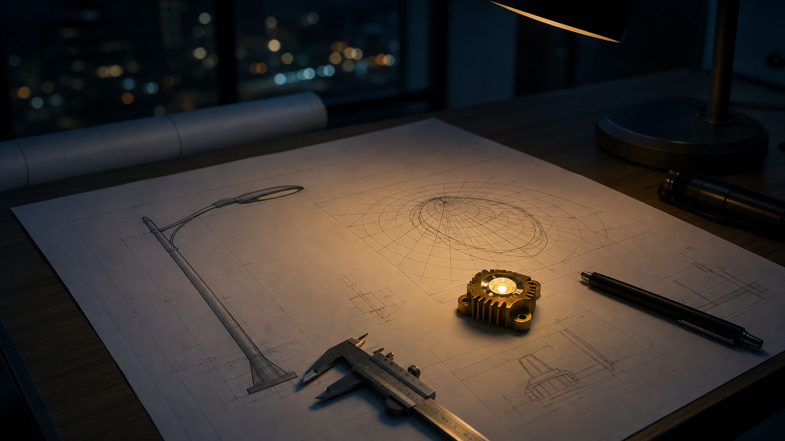
DESIGN · 연구소
기업부설연구소와 설계부가 배광·구조·도면을 직접 설계합니다. 도로 조건과 천장 높이, 시방서 요구까지 반영해 제작 도면을 만듭니다.


PRODUCTION · 생산
생산 1·2동과 자재물류동에서 절곡기·자동용접기 등 89종 설비로 스테인리스·철제 등주와 조명타워, LED 등기구를 자체 생산합니다.
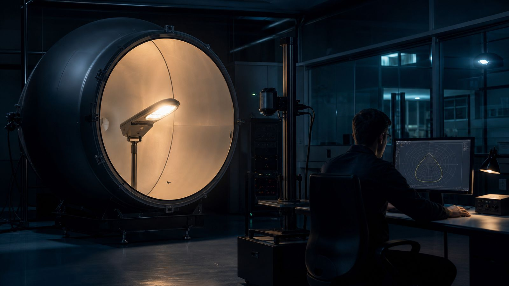
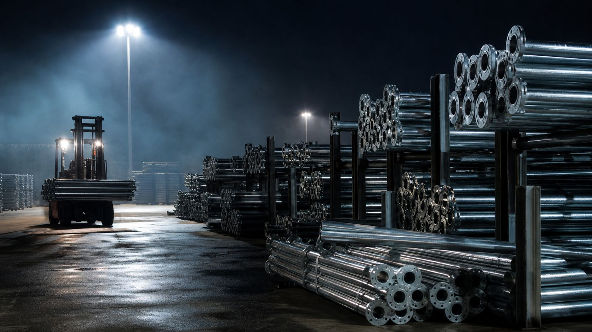
QUALITY & SUPPLY · 품질·납품
자체 품질시험실에서 만능재료시험기 외 40종 검사설비로 전수 검사하고, 출고·물류와 현장 납품까지 한 회사가 책임집니다.
전체 면적
7,550평
공장부지
6,250평
제조시설
1,300평
생산동
2개동
제조설비
89종
검사설비
40종
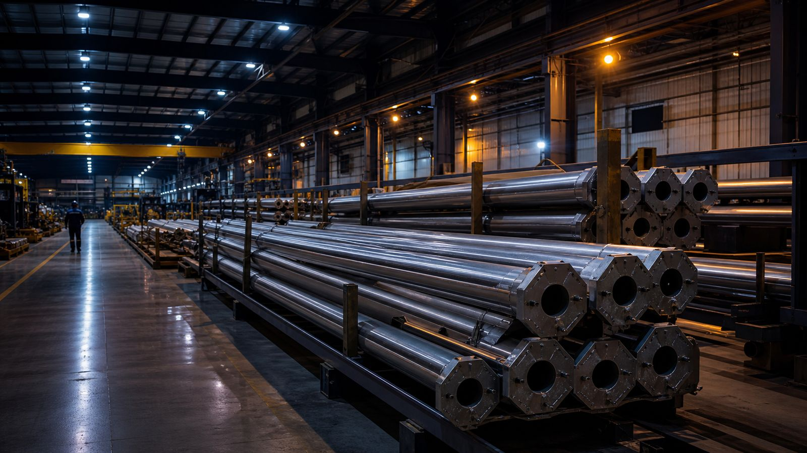
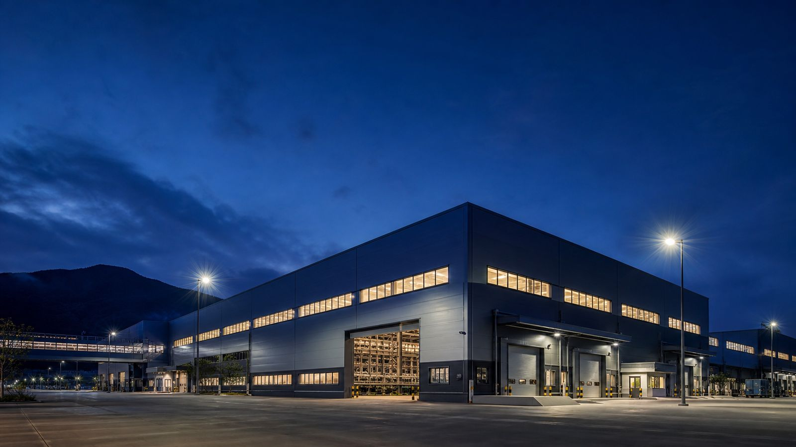
FACTORY
강관 절단·절곡에서 용접·도장·조립까지. 조명기구와 등주를 같은 부지에서 만들기 때문에 규격 변경과 납기 조정이 빠릅니다.
※ 공정·공장 이미지는 분위기를 전달하기 위한 연출 이미지입니다. 실제 시설과 생산 현장 사진은 회사 지명원(PDF)에서 확인하실 수 있습니다.
BUSINESS SCOPE
가로등·터널·교통신호등주와 그 구조물을 하나로 묶은 도로·교통 인프라, 대형 경기장을 낮처럼 밝히는 스포츠 투광조명, 도시의 밤을 디자인하는 경관 조명. 세 영역 모두 설계·제조·납품을 직접 합니다.

ROAD · TUNNEL · TRAFFIC SIGNAL
가로등·터널등·교통신호등주부터 그 조명을 세우는 지주와 수배전반까지 한 번에. 도로 조건에 맞춘 배광 설계와 구조 검토, 현장 납품까지 한 회사가 맡습니다.


STADIUM · FLOODLIGHT
대형 운동장과 경기장을 낮처럼 밝히는 고출력 스포츠 투광조명. 조명타워와 등기구를 함께 설계해 선수와 관중 모두 눈부심 없이 경기를 볼 수 있게 만듭니다.

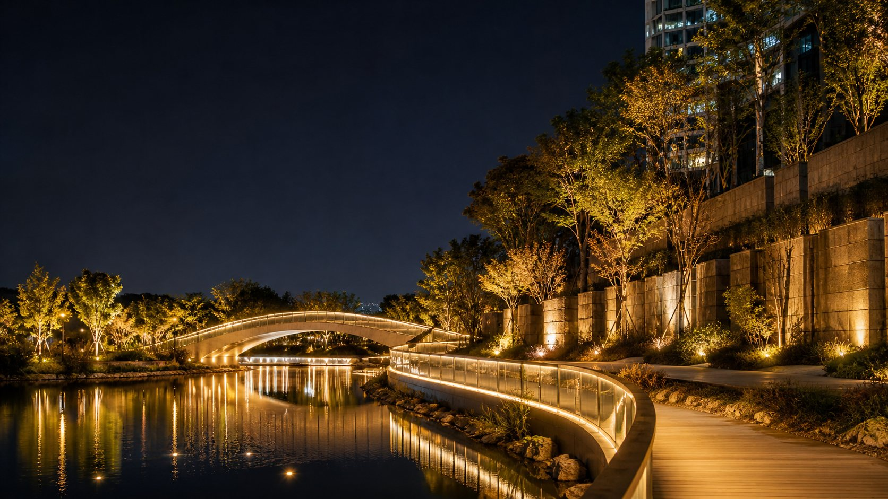
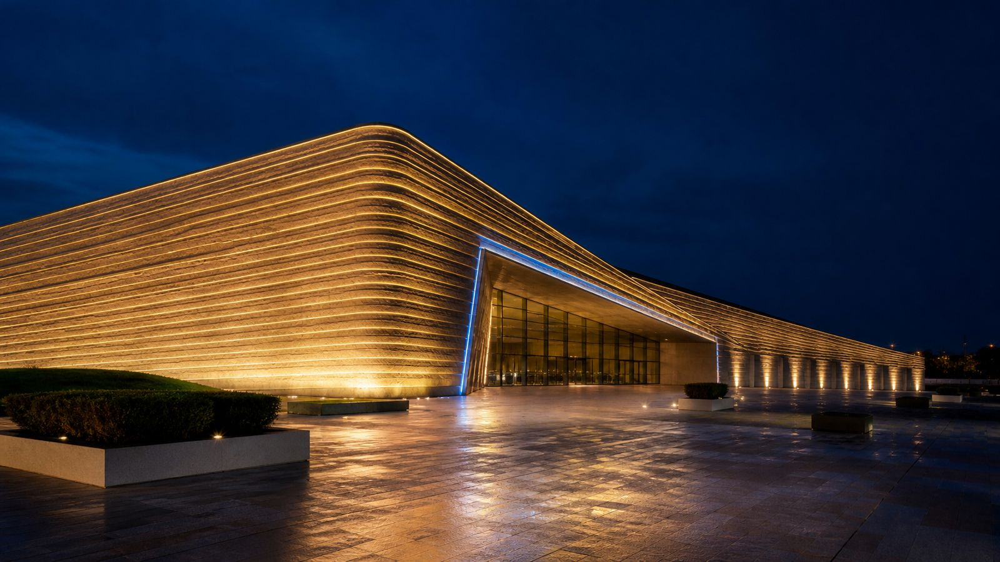
LANDSCAPE · RGB & WARM
화려한 RGB 연출과 따뜻한 웜골드 톤을 현장에 맞춰 함께 씁니다. 교량·수변·건축물 외벽과 공원·광장까지, 조명제어시스템으로 밤의 표정을 만듭니다.
ONLINE SHOP
LED 가로등·보안등·경관조명부터 철제·스텐 가로등주, 투광기, 신호등주, 부속자재까지. 직영 쇼핑몰에서 제품 구성과 규격을 바로 확인하실 수 있습니다.
DOCUMENT
회사 현황과 인·허가, 납품실적은 지명원에, 모델별 도면과 사양은 관급 카다로그에 정리되어 있습니다.
※ 지명원 24페이지 · 관급 카다로그 104페이지 (2026년 기준)
PROJECT & REFERENCE
가로등주와 신호등주, 조명타워, 스포츠 투광, 교량과 건축물 경관조명까지. 지자체 도로와 공공기관, 산업 플랜트에서 쌓아온 여섯 가지 현장입니다.
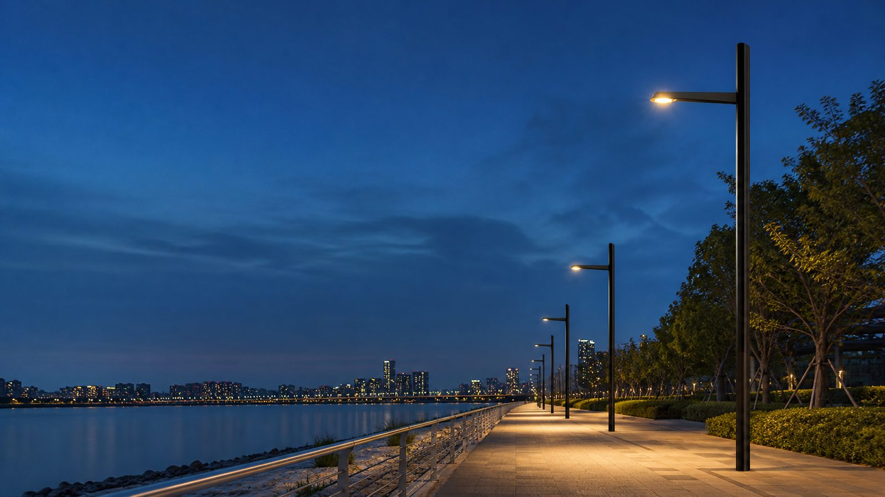
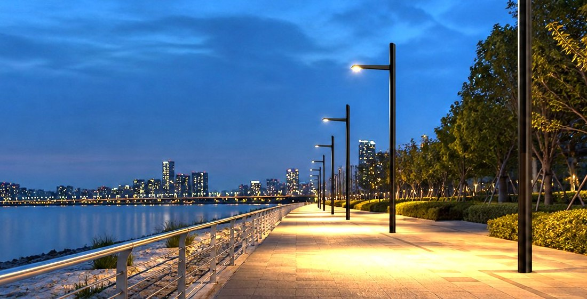

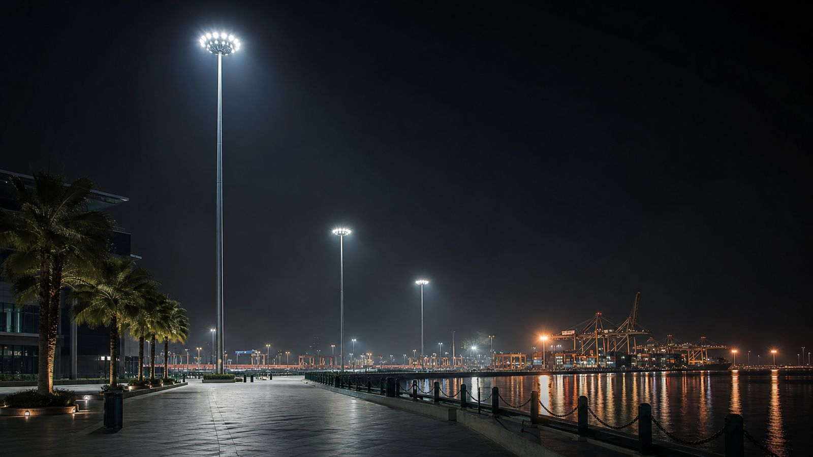
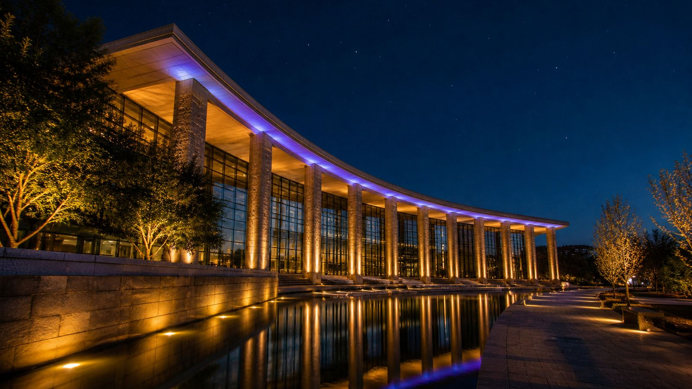
대구광역시 · 부산광역시 · 울산광역시 · 성남시 · 용인시 · 수원시 · 화성시 · 평택시 · 안산시 · 시흥시 · 부천시 · 오산시 · 안성시 · 포항시 · 경주시 · 김해시 · 창원시 · 진주시 · 원주시 · 제주시 · 서귀포시 외 다수
경남·대구·광주·인천·대전·강원 지방조달청 · 경기주택도시공사 · 경기도 건설본부 · 경남도시개발공사 · 서울시 서대문구청·동대문구청·관악구청·용산구청 · 해운대구청 · 농심 메가마트 · 서울 상수도사업본부
월성원자력발전소 · 아산 현대자동차 · 인천신공항 건설단 · LG건설 · 고속철도 차량기지 · 용평리조트 · 경주박물관 · 중앙대학교 · 홍익대학교 · 한성대학교 · 평택대학교 · 한경대학교 · 순천향대학교
※ 납품처는 회사 지명원(2026.04)에 기재된 실적을 옮긴 것입니다. 현장 이미지는 분위기를 전달하기 위한 연출 이미지이며, 실제 현장 사진은 회사 지명원(PDF)에서 확인하실 수 있습니다.
PUBLIC PROCUREMENT
절연링을 이용한 간극 결합구조의 알루미늄형 감전예방 가로등주가 2026년 조달청 혁신제품(2026-054)으로 지정되었습니다.
39년간 쌓아온 등주 제조 기술이 감전 위험을 구조로 줄인 제품으로 인정받은 결과입니다.
혁신제품 지정기간 동안 국가·지방자치단체와 수의계약이 가능합니다.
국가계약법 시행령 제26조 · 지방계약법 시행령 제25조구매 책임자는 고의·중대한 과실이 입증되지 않는 한 손실에 대한 책임을 지지 않습니다.
조달사업에 관한 법률최초 지정 3년 후 1차(1년)·2차(2년) 연장 신청이 가능합니다.
혁신제품 지정 유효기간 2026.03.20 ~ 2029.03.19CERTIFICATION & TECHNOLOGY
혁신제품 지정과 KS·K마크, 고효율에너지기자재, 환경표지, 직접생산확인까지. 제품과 공장, 품질·납품 역량을 함께 인정받았습니다.

조달청 2026-054
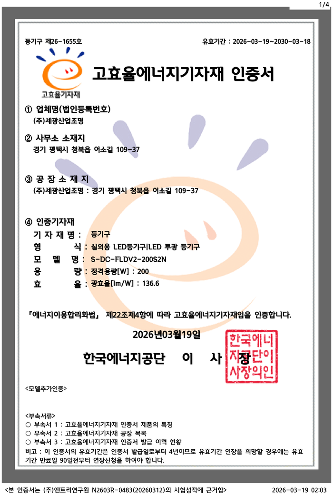
한국에너지공단 · 9건

제17796호
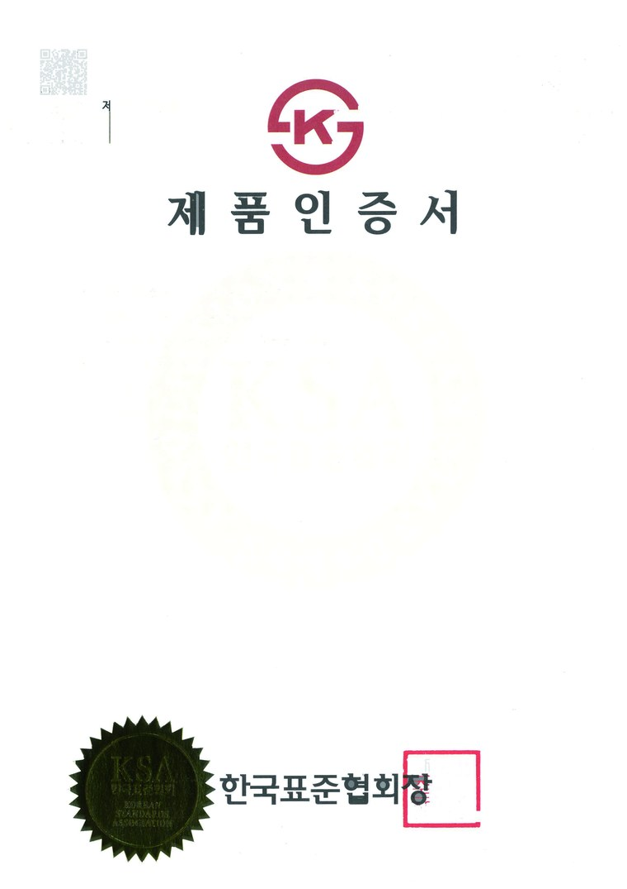
4개 품목

5개 품목
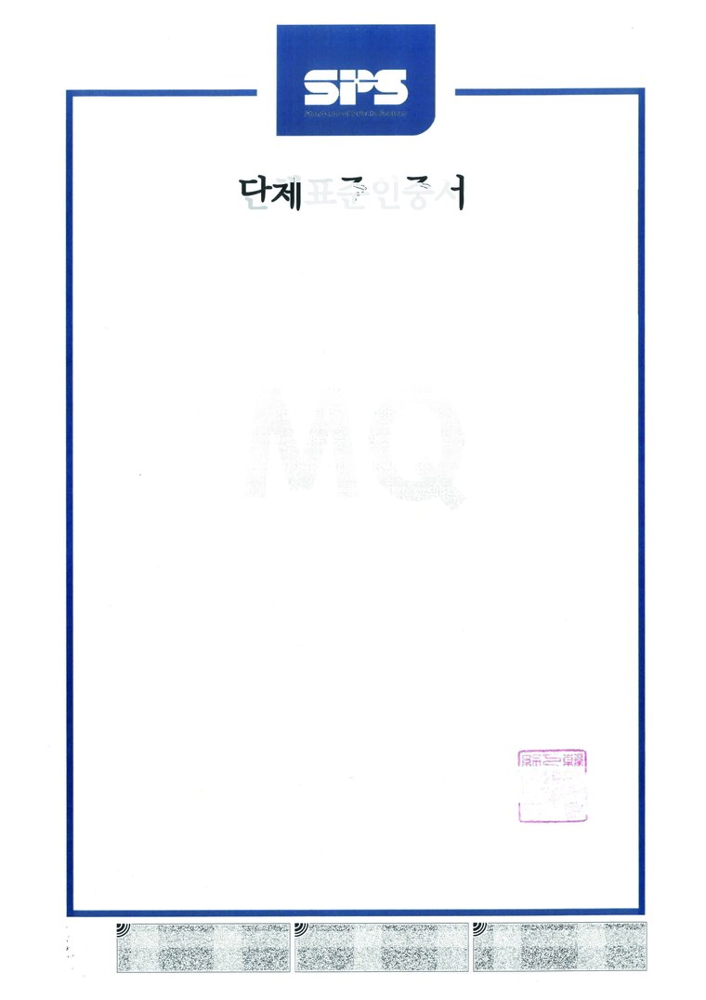
조명조합
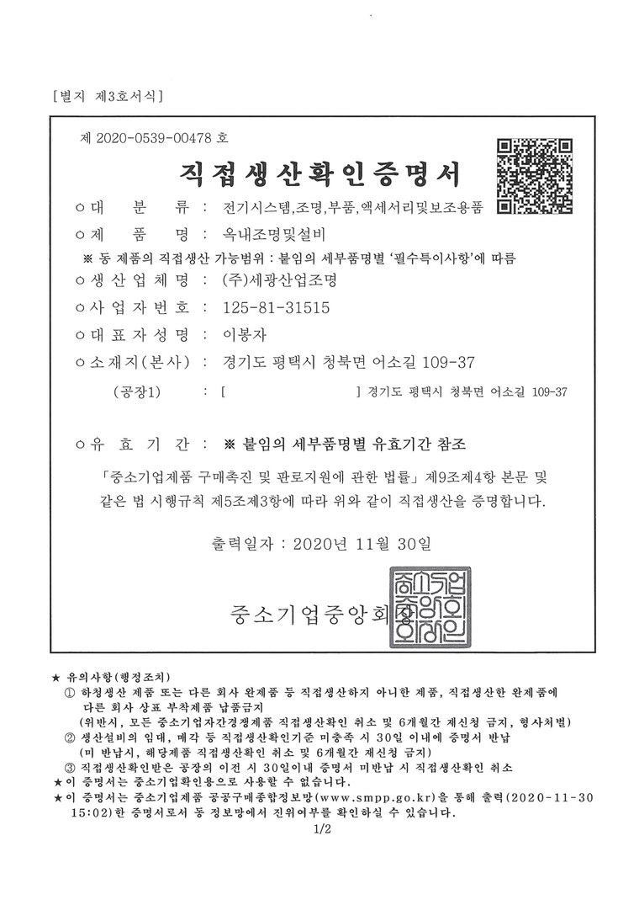
중소벤처기업부 · 6개 품목
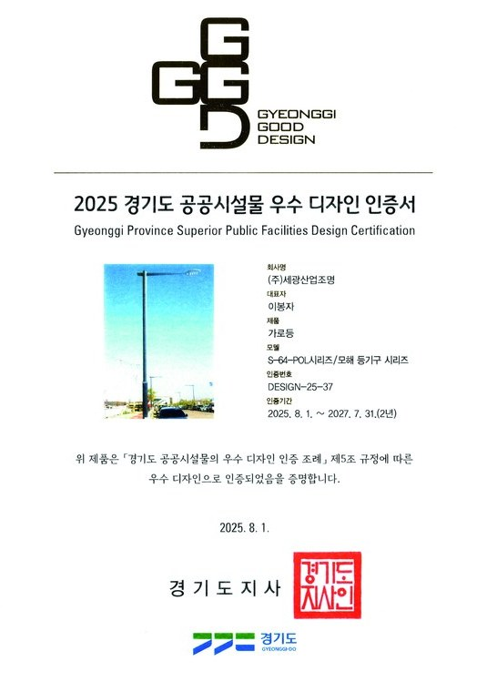
DESIGN-25-37
※ 인증·인허가 상세와 인증서 원본은 회사 지명원(PDF)에서 확인하실 수 있습니다. 모델별 광효율·인증번호는 인증서 기재값을 기준으로 안내합니다.
COMPANY
(주)세광산업조명은 인간의 감성과 소통하고 삶의 질을 향상시키는 discovery & amenity 디자인을 지향합니다. 특히 조명 부분에서 차별화된 환경디자인을 연구함으로써 새로운 가치를 창조하고, 이를 통한 고객만족을 경영목표로 삼아 역량을 집중해 나갈 것입니다. 새로운 조명 기자재를 응용·보급함으로써 에너지 절감과 녹색성장에 기여하는 작지만 강한 기업이 되겠습니다.
LOCATION
서해안고속도로 청북IC에서 약 4분 거리입니다.
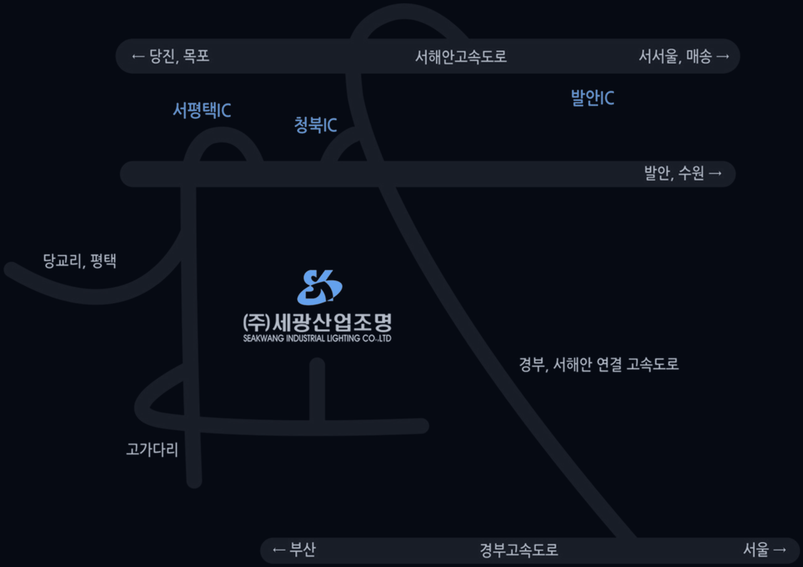
CONTACT
현장 조건과 규모, 납기 일정을 알려주시면 설계·견적 담당자가 확인 후 연락드립니다.